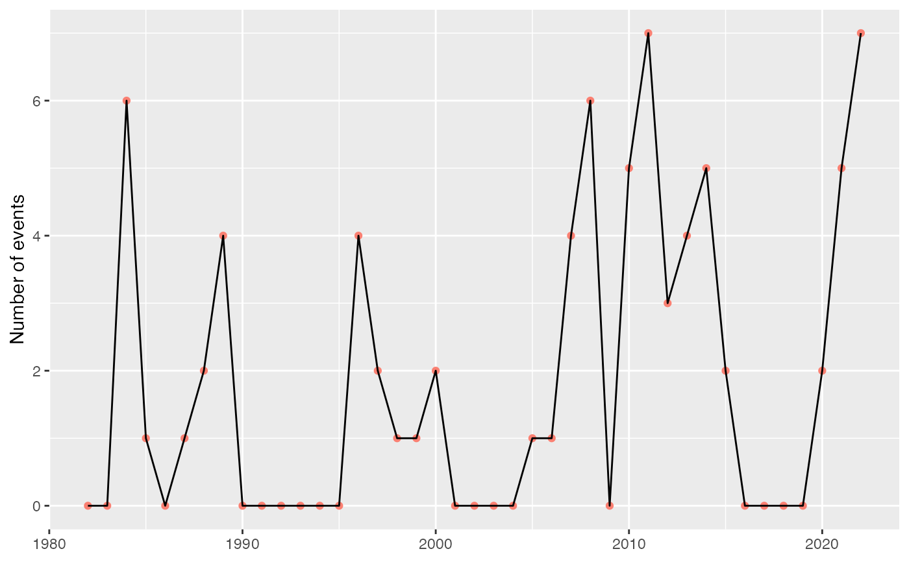

Calculate yearly means for event metrics.
block_average(data, x = t, y = temp, report = "full")Accepts the data returned by the detect_event function.
This column is expected to contain a vector of dates as per the
specification of ts2clm. If a column headed t is present in
the dataframe, this argument may be omitted; otherwise, specify the name of
the column with dates here.
This is a column containing the measurement variable. If the column
name differs from the default (i.e. temp), specify the name here.
Specify either full or partial. Selecting full causes
the report to contain NAs for any years in which no events were detected
(except for count, which will be zero in those years), while partial
reports only the years wherein events were detected. The default is full.
The function will return a data frame of the averaged (or aggregate) metrics. It includes the following:
The year over which the metrics were averaged.
The number of events per year.
The average duration of events per year [days].
The maximum duration of an event in each year [days].
The average event "mean intensity" in each year [deg. C].
The average event "maximum (peak) intensity" in each year [deg. C].
The maximum event "maximum (peak) intensity" in each year [deg. C].
The average event "intensity variability" in each year [deg. C].
The average event "cumulative intensity" in each year [deg. C x days].
Average event onset rate in each year [deg. C / days].
Average event decline rate in each year [deg. C / days].
Total number of events days in each year [days].
Total cumulative intensity over all events in each year [deg. C x days].
intensity_max_relThresh, intensity_mean_relThresh,
intensity_var_relThresh, and intensity_cumulative_relThresh
are as above except relative to the threshold (e.g., 90th percentile) rather than the seasonal climatology.
intensity_max_abs, intensity_mean_abs, intensity_var_abs, and
intensity_cumulative_abs are as above except as absolute magnitudes
rather than relative to the seasonal climatology or threshold.
This function needs to be provided with the full output from the detect_event
or exceedance functions. Note that the yearly averages are calculated only for
complete years (i.e. years that start/end part-way through the year at the beginning
or end of the original time series are removed from the calculations).
This function differs from the python implementation of the function of the
same name (i.e., blockAverage, see https://github.com/ecjoliver/marineHeatWaves)
in that we only provide the ability to calculate the average (or aggregate)
event metrics in 'blocks' of one year, while the python version allows
arbitrary (integer) block sizes.
Note that if this function is used on the output of exceedance, all of the metrics
(see below) with relThresh in the name will be returned as NA values.
Hobday, A.J. et al. (2016), A hierarchical approach to defining marine heatwaves, Progress in Oceanography, 141, pp. 227-238, doi: 10.1016/j.pocean.2015.12.014
ts <- ts2clm(sst_WA, climatologyPeriod = c("1983-01-01", "2012-12-31"))
res <- detect_event(ts)
out <- block_average(res)
summary(glm(count ~ year, out, family = "poisson"))
#>
#> Call:
#> glm(formula = count ~ year, family = "poisson", data = out)
#>
#> Deviance Residuals:
#> Min 1Q Median 3Q Max
#> -2.4410 -1.6343 -0.6560 0.9013 3.4377
#>
#> Coefficients:
#> Estimate Std. Error z value Pr(>|z|)
#> (Intercept) -63.70416 20.29044 -3.140 0.00169 **
#> year 0.03209 0.01011 3.173 0.00151 **
#> ---
#> Signif. codes: 0 ‘***’ 0.001 ‘**’ 0.01 ‘*’ 0.05 ‘.’ 0.1 ‘ ’ 1
#>
#> (Dispersion parameter for poisson family taken to be 1)
#>
#> Null deviance: 116.78 on 40 degrees of freedom
#> Residual deviance: 106.27 on 39 degrees of freedom
#> AIC: 176.77
#>
#> Number of Fisher Scoring iterations: 6
#>
library(ggplot2)
ggplot(data = out, aes(x = year, y = count)) +
geom_point(colour = "salmon") +
geom_line() +
labs(x = NULL, y = "Number of events")
